BACKGROUND
Miss T is a Twitch streamer who's been streaming frequently for about a year and I have been following. As such she has a more robust dataset than Acodaar. She has a sufficient number of followers, now over 30,000, to be tracked by External trackers such as Sullygnome. Sully allows the download, in moderation, of CSV files to the public. I choose her because I am familiar with her activities, including two suspensions which should show graphically in the data.
I wish to identify what data sources are available for this streamer, what tools can be appropriate to the aquired data, and what knowledge can be gained from that analysis.
The key stakeholder Me, the analyzer does not have access to what Twitch provides all registered streamers directly both in raw data and a propriatory on site analysis package. All I can get from Twitch is the total number of subscribers now from her site. :
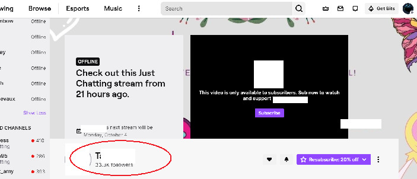
But I can get some detail from external sites, like Sullygnome. A CSV file was downloaded and entered on a spreadsheet where it was cleaned of empty columns.
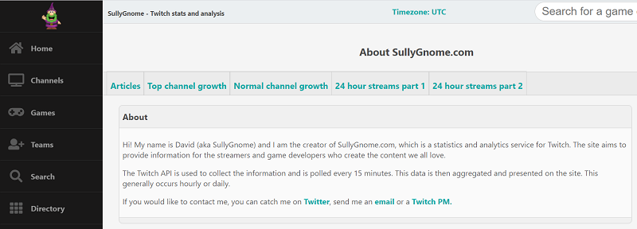
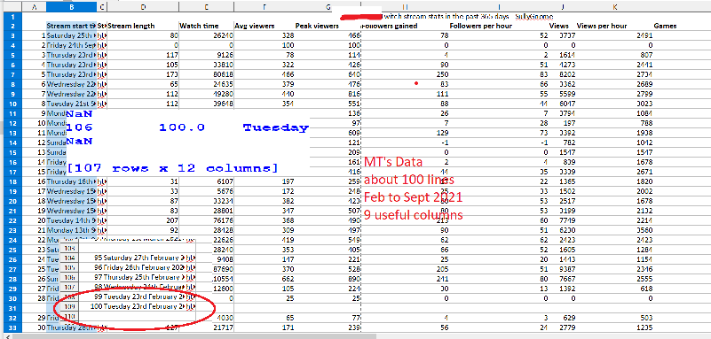
Using Python and Seaborn. Her data showed an outlier that was skewing results.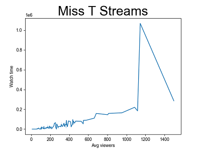
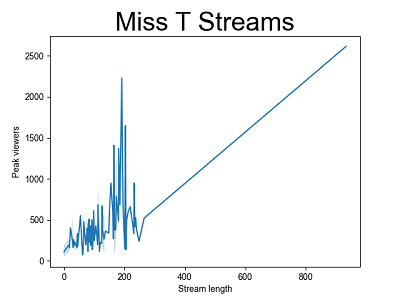
I located the offender, clearly visisible with a reference in the scatterplot.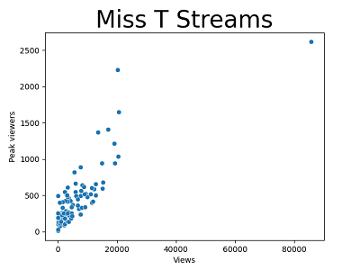
Easily traced back to the spreadsheet.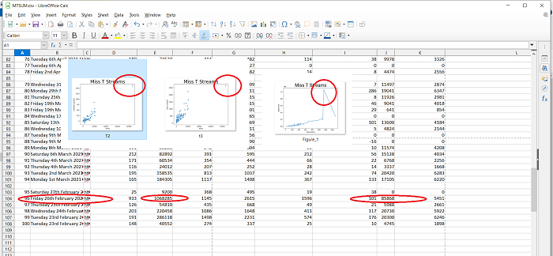
I cleaned it and reprocessed.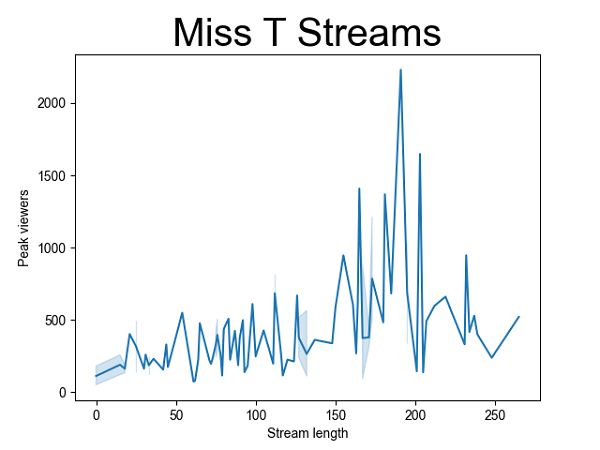
This cleaned data next went to RStudio with the following results.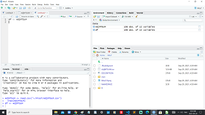
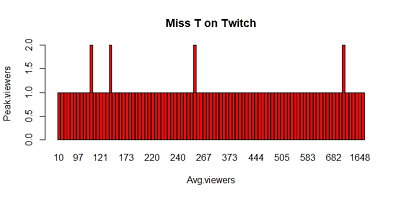
Barplots were'nt working out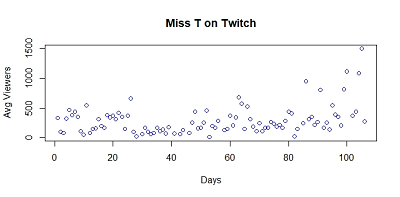
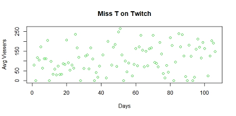
Some Scattergraphs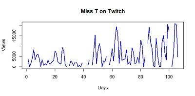
And some line plots.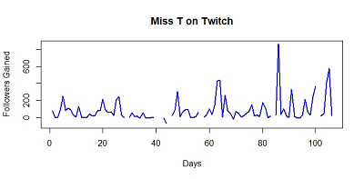
Observations and Conclusions:Miss T is doing great. I think, no finacial info in data. I could see her suspensions on the spreadsheet with days missing data. Didn't really show in the graphs.
The real purpose of this case study was to work with a data set 3 to 10 times larger in lines or lines with data, than the Acodaar case.Discovered third party free data was limited in the columns released and no certainty it had not been tampered with. If working on a real project best to register for the Twitch Api and get the data at it's source.